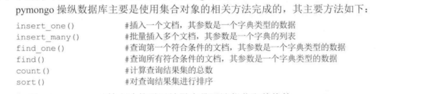

Contents
13.7. Python操作mongoDB数据库¶
MongoDB是一种noSQL（not only SQL）非关系型数据库
13.7.1. MongoDB数据库简介¶
MongoDB是一种强大、灵活、可扩展的数据存储方式，它扩展了关系型数据库大量有用的功能，主要特点有：
MongoDB数据库数据存储没有模式：对于关系型数据库来说，只要建立一个关系，即一张表，那么其中的数据类型基本上就已经定格了，
MongoDB数据存储基本单元是“文档”，每个文档的模式可以不同，不仅数据类型可以不同，其结构也可以不同。
MongoDB具有很强的可扩展性，采用文档数据模型可以自动在服务器之间分割数据，而且服务器可以集群可以平衡服务器的压力，
集群服务器可以自动切换到备份服务器，还可以自动集成和配置新节点。
MongDB支持高并发读写：MongoDB可以通过集群来提高读写性能， 甚至可以建立读写分享的集群服务器。
MongoDB支持海量存储：内置GridFS，支持大容量的存储，GridFS是出色的分布式文件系统，可以支持海量的数据存储，
内置GridFS了MongoDB，能够满足对大数据集的快速范围查询。
13.7.2. 建立mongoDB数据库操作环境¶
https://www.runoob.com/mongodb/mongodb-window-install.html
mongodb的开启和关闭
在D:，输入命令启动MongoDB服务：
mongod -dbpath D:\mongodb\data\db
启动：mongod --dbpath=/application/mongodb/data --logpath=/application/mongodb/log/mongodb.log --port=27017 --logappend --fork
关闭：mongod --shutdown --dbpath=/application/mongodb/data --logpath=/application/mongodb/log/mongodb.log --port=27017 --logappend --fork
13.7.3. MongoDB数据库基础¶
>
> use tese #切换到test数据库
switched to db tese
> db.stu.insert({'name':"liumei","age":15,"grade":2}) # 插入一个稳定到集合stu中
> db.stu.insert({"name":"hanxuan","age":15,"grade":2})
> db.stu.find({"grade":2})) # 列出集合set中grada键值为2的文档
> db.stu.findOne({"grade":2}) # 列出集合set中grada键值为2的第一个文档
> db.stu.update({"name":"hanxuan"},{"$set":{"age":17}}) # 修改集合stu中name为hanxuan的age为17
> db.stu.find({"grade":2})
> db.stu.remove({"name":"liumei"}) # 删除集合stu中name为liumei的文档
> db.stu.find({"grade":2})
{ "_id" : ObjectId("5d11c1a9b854e82b2ac65dee"), "name" : "hanxuan", "age" : 17, "grade" : 2 }
> show dbs #显示所有数据库的名称
admin 0.000GB
config 0.000GB
local 0.000GB
tese 0.000GB
> show collections #显示当前数据库中所有集合名称
stu
> db.stu.drop() # 删除集合stu
true
13.7.4. python操作mongoDB的方式¶
- 安装pymongo三方库
pip install pymongo

#!/usr/bin/env python
# -*- coding:utf8 -*-
# auther; 18793
# Date：2019/6/25 14:48
# filename: 操作1.py
from pymongo import MongoClient
import random
src = "abcdefghijklmnopqrstuvwxyz"
def get_str(x, y):
""" 生成随机数，x~y之间的随机字母字符串"""
str_sum = random.randint(x, y) # 产生x,y之间一个随机整数
astr = ""
for i in range(str_sum):
astr += random.choice(src)
return astr
def get_data_list(n):
res = []
for i in range(n):
res.append({"name": get_str(2, 4), "passwd": get_str(8, 12)})
return res
if __name__ == '__main__':
print("建立连接...................")
'''
db = MongoClient()
db_test = db.test
stus = db_test.stu
'''
stus = MongoClient().test.stu # 一条语句实现连接到集合
print("插入一条记录.................")
stus.insert({"name:": get_str(2, 4), "passwd": get_str(8, 12)})
print("显示所有记录...................")
stu = stus.find() # 显示刚才插入的一个文档
print(stu)
# 批量插入多条记录
stus.insert(get_data_list(3))
# 显示所有记录
print("显示所有记录................")
for stu in stus.find():
print(stu)
print("更新一条记录..........")
name = input("请输入记录的name: ")
stus.update({"name": name}, {"$set": {"name": "aaaa"}}) # 更新
print("显示所有记录")
for stu in stus.find():
print(stu)
print("删除一条记录.........")
name = input("请输入记录的name:")
stus.remove({"name": name})
print("显示所有记录................")
for stu in stus.find():
print(stu)
输出信息
建立连接...................
插入一条记录.................
显示所有记录...................
<pymongo.cursor.Cursor object at 0x000001E06CEED748>
显示所有记录................
{'name:': 'vy', 'passwd': 'odpanxhy', '_id': ObjectId('5d11c68b685a2ca91221a3a2')}
{'passwd': 'ktixfujzsmhw', '_id': ObjectId('5d11c68b685a2ca91221a3a3'), 'name': 'zd'}
{'passwd': 'emikpgew', '_id': ObjectId('5d11c68b685a2ca91221a3a4'), 'name': 'shqq'}
{'passwd': 'cpntpjfzzeah', '_id': ObjectId('5d11c68b685a2ca91221a3a5'), 'name': 'csb'}
更新一条记录..........
请输入记录的name: huijianli
显示所有记录
{'name:': 'vy', 'passwd': 'odpanxhy', '_id': ObjectId('5d11c68b685a2ca91221a3a2')}
{'passwd': 'ktixfujzsmhw', '_id': ObjectId('5d11c68b685a2ca91221a3a3'), 'name': 'zd'}
{'passwd': 'emikpgew', '_id': ObjectId('5d11c68b685a2ca91221a3a4'), 'name': 'shqq'}
{'passwd': 'cpntpjfzzeah', '_id': ObjectId('5d11c68b685a2ca91221a3a5'), 'name': 'csb'}
删除一条记录.........
请输入记录的name:hujianli
显示所有记录................
{'name:': 'vy', 'passwd': 'odpanxhy', '_id': ObjectId('5d11c68b685a2ca91221a3a2')}
{'passwd': 'ktixfujzsmhw', '_id': ObjectId('5d11c68b685a2ca91221a3a3'), 'name': 'zd'}
{'passwd': 'emikpgew', '_id': ObjectId('5d11c68b685a2ca91221a3a4'), 'name': 'shqq'}
{'passwd': 'cpntpjfzzeah', '_id': ObjectId('5d11c68b685a2ca91221a3a5'), 'name': 'csb'}
mongoDB自带导出工具，可以在bin文件夹下打开命令行窗口，输入下面命令即可完成集合向CSV文件的导出。
mongoexport -d mydb -c test --csv -f name,sex,grade -o test.csv
-d 数据库
-c 表数据
-d 表示要导出的字段